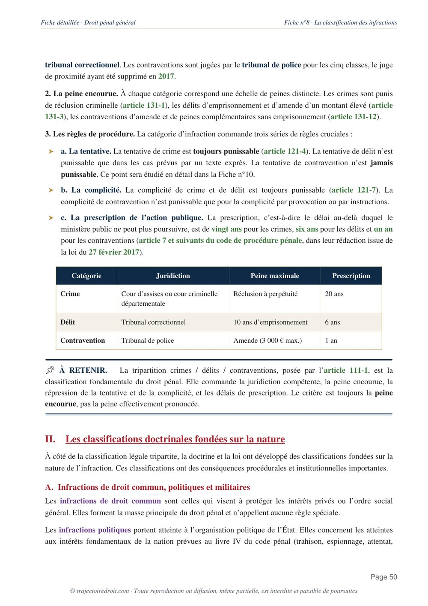

L'arrêt Laboube, expliqué simplement
L'arrêt Laboube, rendu le 13 décembre 1956 par la chambre criminelle de la Cour de cassation, pose la règle qui ouvre presque tout cours de droit pénal général. Un enfant de six ans blesse un camarade en jouant, et la Cour en tire que commettre une infraction suppose d'avoir eu l'intelligence et la volonté de son acte. Cette fiche reprend les faits, la procédure, l'attendu de principe et la manière de t'en servir jusqu'au seuil d'âge fixé en 2021.

L'essentiel en une phrase
L'arrêt Laboube a été rendu le 13 décembre 1956 par la chambre criminelle de la Cour de cassation (pourvoi n° 55-05.772). Il pose que toute infraction, même non intentionnelle, suppose que son auteur ait agi avec intelligence et volonté. Un enfant dépourvu de discernement, incapable de comprendre et de vouloir son acte, ne peut donc commettre aucune infraction pénale, quel que soit le dommage matériellement causé.
Cette phrase fonde pourtant toute la théorie de la responsabilité pénale des mineurs, et bien au-delà. Avant Laboube, rien dans les textes ne disait clairement qu'un enfant trop jeune pour comprendre son acte échappait au droit pénal. Après Laboube, cette idée devient un principe que le législateur reprendra en 2002, puis en 2021, sans jamais le remettre en cause.
Laboube fait deux choses en même temps. Il exige l'intelligence et la volonté comme condition de toute infraction, intentionnelle ou non. Il en tire une conséquence plus radicale qu'une simple excuse. Un enfant sans discernement n'a commis aucune infraction du tout, faute d'un des éléments qui la constituent.
Un enfant de six ans blesse involontairement une camarade avec laquelle il joue.
La cour d'appel de Colmar écarte la culpabilité de l'enfant faute de raison suffisante. Le procureur général forme un pourvoi dans l'intérêt de la loi.
La Cour de cassation pose que toute infraction suppose intelligence et volonté chez son auteur.
Le discernement devient la condition générale de toute responsabilité pénale, reprise en 2002 puis précisée en 2021.

Fiche complète
Droit pénal général L1
Les faits, un enfant de six ans blesse une camarade en jouant
Un enfant de six ans blesse involontairement une camarade avec laquelle il joue. Il n'a aucune intention de nuire. Le geste s'inscrit dans le déroulement ordinaire d'un jeu entre très jeunes enfants. La blessure est pourtant bien réelle, et la question se pose de savoir si elle peut être imputée pénalement à un enfant aussi jeune.
La procédure, du tribunal pour enfants au pourvoi dans l'intérêt de la loi
Saisi le premier, le tribunal pour enfants de Strasbourg déclare l'enfant coupable de blessures involontaires et tient son père civilement responsable, sans prononcer aucune peine à son encontre. Il ordonne seulement une mesure de remise à sa famille.
Sur appel, la chambre spéciale des mineurs de la cour d'appel de Colmar, dans un arrêt du 1er décembre 1953, confirme la matérialité des faits et la remise à la famille, mais écarte la déclaration de culpabilité et la responsabilité civile du père. Elle retient que l'âge de l'enfant ne lui permettait pas de répondre d'une infraction, faute de raison suffisante pour comprendre la portée de son acte.
Le procureur général près la Cour de cassation forme alors un pourvoi contre cet arrêt, dans le seul intérêt de la loi. Ce type de pourvoi sert seulement à donner à la Cour de cassation la possibilité de fixer, pour l'avenir, le principe exact de droit sur lequel une telle solution doit reposer. Le sort des parties, déjà fixé par la décision de Colmar, ne change pas.
Le problème de droit
La question posée à la Cour de cassation se formule ainsi. Une infraction, même non intentionnelle, peut-elle être imputée à un mineur qui, en raison de son jeune âge, ne dispose pas du discernement nécessaire pour comprendre et vouloir l'acte qui lui est reproché ?
La solution de la Cour de cassation
La Cour de cassation répond par la négative, et elle pose ce principe dans une formule devenue la référence de tout le droit pénal des mineurs. Apprends-la mot pour mot. Elle te sert dans presque tous les cas pratiques qui mettent en scène un mineur.
L'attendu de principe
« Toute infraction, même non intentionnelle, suppose en effet que son auteur ait agi avec intelligence et volonté. »Cass. crim., 13 décembre 1956, n° 55-05.772, Laboube
La Cour de cassation casse et annule, dans le seul intérêt de la loi et sans renvoi, l'arrêt du 1er décembre 1953 de la cour d'appel de Colmar. Une cassation dans l'intérêt de la loi ne change rien au sort de l'enfant, qui reste hors de cause depuis la décision de Colmar. Elle sert seulement à inscrire le principe exact dans la jurisprudence de la Cour de cassation elle-même. Le discernement conditionne l'existence même de l'infraction, et pas seulement la peine qui viendrait la sanctionner.
Le sens du raisonnement
Pour comprendre cet arrêt, il faut voir ce qu'il refuse. La cour d'appel de Colmar avait en somme raisonné en deux temps. Elle avait d'un côté constaté matériellement les blessures, et de l'autre écarté seulement la responsabilité de l'enfant en raison de son âge, comme si l'absence de discernement jouait le rôle d'une excuse venant s'ajouter après coup à une infraction déjà caractérisée.
La Cour de cassation pose une tout autre logique. L'intelligence et la volonté conditionnent l'infraction dès le départ. La Cour appelle intelligence la capacité de comprendre son acte. Elle appelle volonté la capacité de diriger librement son acte. Sans cette double aptitude, appelée l'imputabilité, il n'y a pas d'infraction du tout, pas même une infraction dont l'auteur serait seulement excusé.
Cette distinction compte énormément en copie. Il ne faut pas confondre l'imputabilité, qui est la capacité de l'agent à répondre de ses actes, et la culpabilité, qui est la faute elle-même, intentionnelle ou d'imprudence. Avant de chercher si l'enfant a commis une faute, il faut qu'il ait été apte à en commettre une. Faute de cette aptitude, la question de sa faute ne se pose même pas.
L'exigence vaut pour toute infraction, y compris non intentionnelle, ce que la Cour souligne expressément par les mots « même non intentionnelle ». Un enfant qui blesse un camarade par imprudence n'est pas moins protégé qu'un enfant qui frapperait volontairement. Même une simple maladresse suppose, pour être fautive, un auteur capable de se représenter le danger et de se conduire autrement. En dessous du seuil du discernement, la notion même de faute perd son sens.
Tu révises ton droit pénal général ?
Reçois gratuitement mon guide « Réviser le droit sans s'épuiser ». La méthode que mes élèves utilisent pour retenir les grands arrêts sans les bachoter la veille.
L'arrêt Laboube est-il toujours d'actualité ?
Oui, et sa portée dépasse largement le cas d'un enfant de six ans. Laboube pose une règle générale, valable pour tout auteur d'infraction quel que soit son âge, ce qui explique qu'il reste cité aujourd'hui bien au-delà du seul droit des mineurs. La chambre criminelle applique la même logique au discernement aboli par un trouble mental, prévu par l'article 122-1 du Code pénal, comme elle l'a rappelé dans l'affaire Sarah Halimi (Crim., 14 avril 2021, n° 20-80.135).
Pendant des décennies, ce discernement est resté apprécié au cas par cas par le juge, sans le moindre repère d'âge. L'ordonnance du 2 février 1945 relative à l'enfance délinquante, visée par l'arrêt, organisait déjà une justice éducative pour les mineurs, mais sans fixer aucun seuil. Le mineur répondait de ses actes s'il avait, en fait, agi avec discernement, ce que le juge devait vérifier enfant par enfant.
La loi Perben du 9 septembre 2002 inscrit ensuite la règle de Laboube dans le Code pénal, à l'article 122-8, qui dispose que les mineurs capables de discernement sont pénalement responsables des infractions dont ils sont reconnus coupables. Le texte reprend l'idée de l'arrêt presque mot pour mot, mais sans fixer d'âge non plus, laissant l'appréciation au cas par cas. Le Conseil constitutionnel a d'ailleurs donné à cette exigence une protection de valeur constitutionnelle, en reconnaissant un principe fondamental reconnu par les lois de la République propre à la justice des mineurs (Cons. const., n° 2002-461 DC, 29 août 2002).
Le grand changement vient du Code de la justice pénale des mineurs, entré en vigueur le 30 septembre 2021. Son article L. 11-1 conserve la définition héritée de Laboube, à savoir que le mineur capable de discernement est celui qui a compris et voulu son acte. Mais il y ajoute un repère chiffré. Le mineur de moins de treize ans est présumé sans discernement, donc irresponsable. Le mineur de treize ans et plus est présumé capable de discernement. Le texte parle bien de présomptions, et non de règles automatiques, ce qui laisse toujours au juge la possibilité de vérifier le discernement réel de l'enfant, dans un sens comme dans l'autre. Cette marge de vérification concrète découle directement de la protection constitutionnelle reconnue dès 2002 à la justice des mineurs. L'appréciation concrète voulue par Laboube n'a donc jamais disparu. Elle est seulement encadrée depuis 2021 par un seuil d'âge.
Si tu veux revoir tout le programme de la matière, du principe de légalité jusqu'aux causes d'irresponsabilité, ma fiche de droit pénal général L1 reprend chaque notion et chaque grand arrêt à connaître. Pour distinguer nettement ce que Laboube change sur le terrain pénal de ce qui reste vrai sur le terrain civil, où le très jeune enfant peut être tenu de réparer un dommage sans discernement depuis les arrêts d'assemblée plénière du 9 mai 1984, va voir ma fiche de responsabilité civile L2. Sur l'autre grande condition de la responsabilité pénale, celle qui porte sur les actes eux-mêmes plutôt que sur leur auteur, mon article sur l'arrêt Perdereau t'explique pourquoi la tentative reste punissable même quand le résultat était impossible à atteindre.
La critique doctrinale de cette solution
Le principe posé par Laboube fait consensus. Il est largement salué comme une protection nécessaire des plus vulnérables, l'enfant d'abord, le malade mental plus tard. Punir quelqu'un qui n'a pas pu comprendre ce qu'il faisait n'aurait aucun sens, et la doctrine classique, en particulier le Traité de droit criminel de Roger Merle et André Vitu, a très tôt salué cette exigence d'une aptitude psychologique minimale comme fondement de toute responsabilité pénale.
La critique porte ailleurs, sur l'imprécision durable de la notion. En 1956, la Cour de cassation exige l'intelligence et la volonté sans jamais préciser où cette exigence se situe dans la théorie de l'infraction, ni s'il s'agit d'une condition autonome ou d'une simple composante de l'élément moral. Ce flou a nourri un débat doctrinal qui n'est toujours pas clos, une partie des auteurs continuant de discuter la place exacte de l'imputabilité par rapport à la culpabilité elle-même.
Une autre critique, plus concrète, porte sur le temps qu'il a fallu au législateur pour donner au juge un repère utilisable. La Cour de cassation avait posé le principe dès 1956, sans le moindre seuil d'âge, ce qui plaçait les juges du fond devant un exercice délicat, à savoir apprécier au cas par cas si un enfant de huit, dix ou douze ans comprenait la portée de son acte, avec le risque de solutions différentes d'un tribunal à l'autre pour des faits comparables. Il a fallu attendre 2021, soit soixante-cinq ans, pour qu'un texte fixe enfin un âge de référence. Certains auteurs regrettent ce long silence du législateur. D'autres y voient au contraire la preuve que la formule de 1956 se suffisait à elle-même, assez solide pour continuer à s'appliquer sans texte pendant des décennies.
Comment utiliser l'arrêt Laboube dans une copie
Dans un cas pratique. Tu cites Laboube dès qu'un énoncé de droit pénal général met en scène un mineur, en particulier un enfant en bas âge. Avant même de vérifier l'élément matériel ou l'élément moral de l'infraction, tu dois t'assurer que son auteur disposait du discernement nécessaire. Depuis 2021, tu situes d'abord l'âge donné par l'énoncé par rapport au seuil de treize ans posé par l'article L. 11-1 du Code de la justice pénale des mineurs, avant de rappeler que cette présomption reste réfragable.
Dans une dissertation sur la responsabilité pénale des mineurs ou sur les éléments de l'infraction. Laboube te sert de point de départ historique, avant de montrer comment le droit positif a organisé cette exigence à travers la loi de 2002 puis le Code de 2021. Pour la méthode complète, regarde ma page sur la fiche d'arrêt et celle sur le raisonnement juridique étape par étape.
Les erreurs à éviter avec l'arrêt Laboube
- Croire que l'enfant est seulement excusé. L'absence de discernement va plus loin qu'une excuse qui viendrait atténuer une infraction déjà constituée. Elle empêche l'infraction d'exister. Sans intelligence ni volonté, il n'y a même pas de faute à qualifier.
- Confondre irresponsabilité pénale et irresponsabilité civile. Le très jeune enfant reste tenu de réparer le dommage qu'il cause sur le plan civil, même sans discernement, depuis les arrêts d'assemblée plénière du 9 mai 1984. Laboube ne concerne que le terrain pénal.
- Citer Laboube sans mentionner le seuil de treize ans. Depuis le Code de la justice pénale des mineurs de 2021, une copie complète mentionne la présomption d'âge posée par l'article L. 11-1, tout en rappelant qu'elle reste réfragable.
- Réciter la date sans le numéro de pourvoi ni la juridiction exacte. Cass. crim., 13 décembre 1956, n° 55-05.772. Cette précision distingue une copie qui connaît sa source d'une copie qui répète un nom appris par cœur.
Questions fréquentes
Que dit l'arrêt Laboube en une phrase ?
Quelle est la date et la juridiction de l'arrêt Laboube ?
L'arrêt Laboube est-il toujours d'actualité ?
Comment citer l'arrêt Laboube en copie ?
Quelle différence entre le discernement de Laboube et la présomption d'âge de 2021 ?

Va plus loin que Laboube et maîtrise tout le droit pénal général.
Ma fiche de droit pénal général L1 reprend chaque grand arrêt et chaque notion, expliqués simplement et prêts à servir en commentaire comme en cas pratique.
Voir la fiche de droit pénal général L1